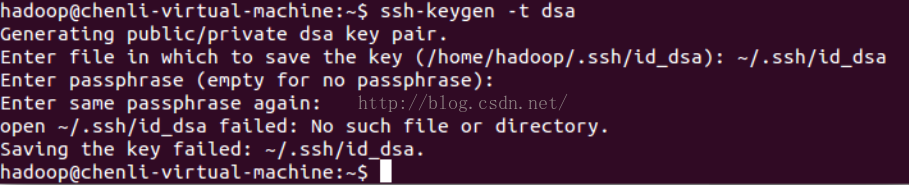
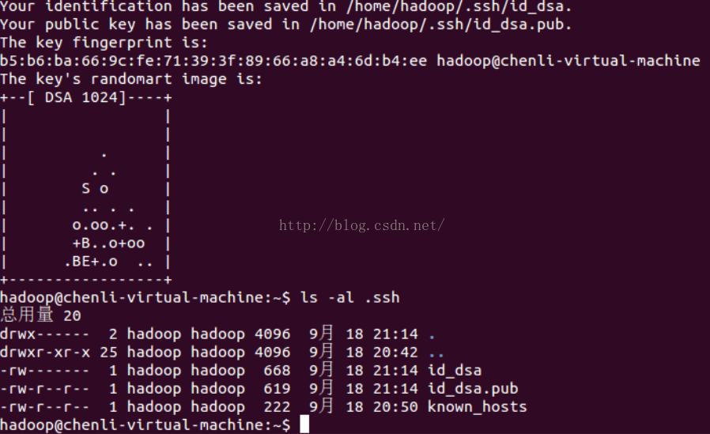
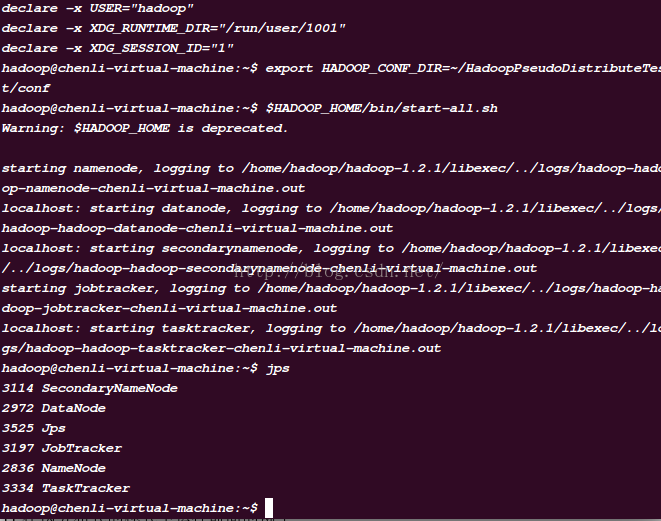
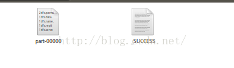
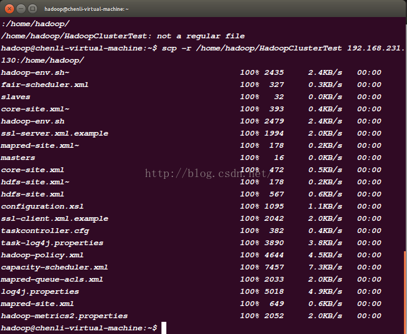
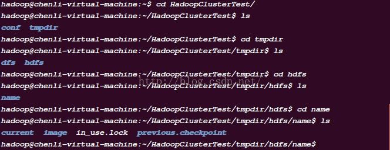
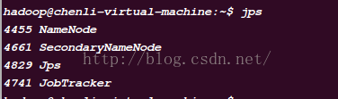
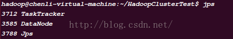

前言
由于安装已经很长时间了，有些问题我已记不得太清，如果哪里有手误敬请指出。但是要记住遇到问题可以直接上网查，就算你不知道为什么有问题你让可以把报错的那句话复制
直接查。
我这个大概适用的是1.X版本。要提醒各位，一定要学到东西，即使只是安装。不要犯直接复制别人代码ip/别人版本的问题！！！
安装 sun jdk
要求不能安装这个一定要是sunjdk，否则后面会后问题.
安装 ssh
（hadoop使用ssh来实现cluster中各node的登录认证，即Namenode是通过SSH来启动和停止各个datanode上的各种守护进程的，所以一定要实现免密码登录，免密码ssh的设置在后文中有介绍）
1 | sudo apt-get install ssh |
安装rsync
（Ubuntu12.10已自带rsync）
1 | sudo apt-get install rsync |
安装vim
只是为了方便，可以不安装.
1 | ubuntu系统： |
安装Hadoop
安装
1. 创建hadoop用户组以及用户
1 | sudo addgroup hadoop |
在 /home/下会有一个新的hadoop文件夹，此时最好切换至新建的hadoop用户登陆Ubuntu。
2. 将下载的hadoop拷贝至该新建文件夹下：
注意此处命令的目录，这是别人的目录，你的下载目录并不一定就在/mnt/hgfs下。
1 | cp /mnt/hgfs/hadoop-1.2.1-bin.tar.gz /home/hadoop/ |
3. 进入该目录（cd /home/hadoop/）之后，解压该文件
1 | tar xzf hadoop- 1.2.1-bin.tar.gz |
4. 进入hadoop-env.sh 所在目录（hadoop-1.2.1/conf/），对该文件进行如下内容的修改：
1 | export JAVA_HOME=/usr/java/jdk1.6.0_07 |
注：（/usr/java/jdk1.6.0_07 为 jdk安装目录）
5. 为了方便执行Hadoop命令，修改/etc/profiles,在最后面加上：
1 | export JAVA_HOME=/usr/java/jdk1.6.0_07 |
重新启动或者直接执行source etc/profile，使得/etc/profiles生效。
其实这时你的hadoop已经简单安装单机版。
测试及文件配置
单机版测试
hadoop默认是Standalone Operation。按照官方文档进行测试。
1、在 /home/hadoop 目录下建立HadoopStandaloneTest目录：
1 | mkdir HadoopStandaloneTest |
2、在 /home/hadoop/HadoopStandaloneTest目录下执行以下命令：
1 | mkdir input |
命令解释： bin/hadoop jar（使用hadoop运行jar包） hadoop-*_examples.jar（jar包的名字） grep （要使用的类，后边的是参数） input output ‘dfs[a-z.]+’
就是运行hadoop示例程序中的grep，对应的hdfs上的输入目录为input、输出目录为output
3、运行成功标志就是在你的主目录下HadoopStandaloneTest有input，output两个文件夹，且output里会有两个文件，显示执行的结果。建议下个java得反编译的工具查看/hadoop-examples-1.2.1.jar的代码，更能理解这个栗子。
伪分布配置、测试
ssh 配置
启动ssh服务器、客户端
首先查看ssh服务器和ssh客户端是否启动
1 | ps -e|grep ssh |
如看到如下二个进程则 OK
注！！！如果此处你的ssh-agent没有启动成功，执行：
1 | eval ‘ssh-agent’ |
实现ssh免密码登录
测试可否使用ssh登陆localhost
$ ssh localhost
如果发现需要输入密码则执行一下步骤，否则跳过ssh免密码登陆
假设A为客户机器，B为目标机；
要达到的目的： A机器ssh登录B机器无需输入密码；
加密方式选rsa|dsa均可以，默认dsa
做法：
1、登录A机器
2、ssh-keygen -t [rsa|dsa]，将会生成密钥文件和私钥文件id_rsa, id_rsa.pub或id_dsa, id_dsa.pub
3、将.pub文件复制到B机器的.ssh目录, cat id_dsa.pub >> ~/.ssh/authorized_keys
4、大功告成，从A机器登录B机器的目标账户，不再需要密码了；
$ ssh-keygen -t dsa –P ‘’ -f ~/.ssh/id_dsa (先不要着急执行，看下面)
其中
- -t dsa 指定密码算法为 dsa
- -P ‘’ 指不需要 passphrase
- -f ~/.ssh/id_dsa 指定秘钥输出文件
其实在真正执行时，上面的那句命令会说太长无法执行，所以其实只输入前面“$ ssh-keygen -t dsa”即可，输入之后会有其他的提示，提示你输入密码时，直接回车就代表密码回空，具体如下：

之后可以看到 ~/.ssh 目录下多了二个文件：

将 ssh 公钥追加到 authorized_keys 后面，即可实现免密钥登陆。
1 | $ cat ~/.ssh/id_dsa.pub >> ~/.ssh/authorized_keys |
修改 ~/.ssh/authorized_keys的权限，要保证.ssh和authorized_keys都只有用户自己有写权限。否则验证无效。
1 | $ chmod 600 ~/.ssh/authorized_keys |
~/.ssh 目录的权限为700，因此不用修改。
再利用ssh登录，发现不再需要输入密码
1 | $ ssh localhost |
文件配置
在/home/hadoop目录下建立HadoopPseudoDistributeTest目录
1 | $ mkdir HadoopPseudoDistributeTest |
编辑HadoopPseudoDistributeTest/conf/下的配置文件
- core-site.xml: 用于配置Common组件的属性
- hdfs-site.xml: 用于配置HDFS的属性
- mapred-site.xml: 用于配置MapReduce的属性
- masters 指定master节点
- slaves 指定slave节点
注：下面配置文件中有两次用到ip地址（ifconfig命令查询IP地址），一定记得改成你自己的ip地址。
不要在HadoopPseudoDistributeTest创建以下目录tmpdir/hdfs/name tmpdir/hdfs/data【rm -rf 文件夹 命令用来删除非空文件夹】
core-site.xml:
1 | <configuration> |
hdfs-site.xml
1 | <configuration> |
mapred-site.xml
1 | <configuration> |
masters:
1 | localhost |
slave:
1 | localhost |
运行、测试
1、格式化HDFS的namenode（管理元数据）创建一个空的文件系统【可以直接不执行这句话，在下面2中第二句命令后执行“hadoop namenode -format”】
1 | $ hadoop --config ~/HadoopPseudoDistributeTest/conf namenode -format |
注意 --config 后面一定用绝对路径指定配置文件所在的路径
2、运行hadoop（切记：首先使用ssh登陆localhost ）
ssh localhost
export HADOOP_CONF_DIR=~/HadoopPseudoDistributeTest/conf(这样后面就不用带—config选项)
$HADOOP_HOME/bin/start-all.sh3、打开浏览器
** NameNode ** - http://localhost:50070/
** JobTracker ** - http://localhost:50030/
4、运行jps命令看相应服务是否启动：

5、在伪分布式的模式下运行前面的例子
将本地文件系统目录conf拷贝到分布式文件系统的input下（为了执行例子）
cd /home/hadoop/HadoopPseudoDistributeTest
hadoop fs -put conf/*xml input查看分布式文件系统的内容
hadoop fs -ls执行例子
cd ~/HadoopPseudoDistributeTest/
hadoop jar $HADOOP_HOME/hadoop-examples-1.0.4.jar grep input output 'dfs[a-z.]+'
hadoop fs –ls output # 查看执行结果执行正确效果，在 HadoopPseudoDistributeTest 的目录下有input和output文件夹，output中存放两个文件：

6、停止daemon
1 | stop-all.sh |
集群配置
hadoop的基础知识
Master: NameNode、JobTracker，负责总管分布式数据、分解任务的执行
Slave: DataNode、TaskTracker，负责分布式数据存储、任务的执行
主从结构
主节点，只有一个namenode
从节点，有很多个datanodes
namenode: 接收用户操作请求；维护文件系统的目录结构；管理文件与block之间关系，block与datanode之间关系
datanode负责：存储文件；文件被分成block存储在磁盘上；为保证数据安全，文件会有多个副本
namenode会有一个离线备份：SecondaryNamenode
JobTracker负责： 接收客户提交的计算任务， 把计算任务分给TaskTrackers执行， 监控TaskTracker的执行情况
TaskTrackers负责：执行JobTracker分配的计算任务
前提
现在介绍集群分布之前我的环境： 我是把之前一直安装好的ubuntu虚拟机直接无联系的克隆出来两个ubuntu，也就是说我现在要用三个ubuntu。两个也是可以的。
要说明的如果不是克隆出来的，还需要实现几台机器之间ssh登录无密码登录。因为我自己没有做这个不能确保给你们是否正确，可以看看 这篇文章的4部分
如果是为了确保也可以使用克隆的方法。之后尝试ssh 到另两台ubuntu上，不需密码即可，如果需要密码，请重新确保不需密码。
我现在有三台ubuntu，他们的分配：
- node1：namenode 192.168.231.129
- node2：datanode 192.168.231.130
- node3：datanode 192.168.231.131
配置
1、在主目录下创建文件夹HadoopClusterTest，并且如上面2.2.2.2中把conf拷贝到这个文件下。
2、配置conf下的文件
core-site.xml ip是node1的。
1 | <!-- Put site-specific property overrides in this file. --> |
hdfs-site.xml:
1 | <!-- Put site-specific property overrides in this file. --> |
mapred-site.xml ip地址改成自己的！！
1 | <!-- Put site-specific property overrides in this file. --> |
master
1 | 192.168.231.129 |
slaves
1 | 192.168.231.130 |
3、用scp命令把HadoopClusterTest拷贝到另外两台ubuntu上：
1 | scp -r /home/hadoop/HadoopClusterTest 192.168.231.130:/home/hadoop/ |

然后改变ip地址用相同命令拷到另一台里。这样三台电脑的配置就完成了。
运行
下面是它的使用方法（9是我后期稍微熟练之后的开启hadoop的方法）：
4、在三个ubuntu都执行：
1 | export HADOOP_CONF_DIR=~/HadoopClusterTest/conf |
确保三个ubuntu上HadoopClusterTest都没有的tmpdir文件夹然后执行下面的
5、在node1上，即我的192.168.231.129上执行【执行之前确保node1，node2，node3上没有tmpdir文件夹，否则启动namenode和datanode会有问题】：
1 | hadoop namenode -format |
这时在HadoopClusterTest的目录会有tmpdir文件夹，但是node2和node3没有。
6、在node1上，即我的192.168.231.129上执行：
1 | $HADOOP_HOME/bin/start-all.sh |
然后在node1上执行下面的：

7、在node1上执行jps查看启动服务：

在node2、node3上jps查看：

8、浏览NameNode和JobTracker的网络接口，它们的地址默认为(我的node1为192.168.231.129)：
NameNode - http://node1:50070/
JobTracker - http://node1:50030/
9、我自己后期开启集群方法：打开三个虚拟机（但其实下面的命令是只在一台虚拟机上执行的）
打开192.168.231.129的终端。依次输入：
1 | ssh 192.168.231.130 |